Summary
This experiment investigates mangrove restoration planting. Central composite design to maximize seedling survival and growth by tuning planting density, tidal zone position, and sediment amendment.
The design varies 3 factors: density per m2 (plants/m2), ranging from 1 to 6, tidal zone (zone), ranging from 1 to 3, and amendment kg m2 (kg/m2), ranging from 0 to 3. The goal is to optimize 2 responses: survival 1yr pct (%) (maximize) and height gain cm (cm) (maximize). Fixed conditions held constant across all runs include species = rhizophora, site = estuary.
A Central Composite Design (CCD) was selected to fit a full quadratic response surface model, including curvature and interaction effects. With 3 factors this produces 22 runs including center points and axial (star) points that extend beyond the factorial range.
Quadratic response surface models were fitted to capture potential curvature and factor interactions. The RSM contour plots below visualize how pairs of factors jointly affect each response.
Key Findings
For survival 1yr pct, the most influential factors were density per m2 (34.9%), amendment kg m2 (34.9%), tidal zone (30.2%). The best observed value was 81.0 (at density per m2 = 1, tidal zone = 1, amendment kg m2 = 0).
For height gain cm, the most influential factors were tidal zone (51.7%), amendment kg m2 (32.0%), density per m2 (16.3%). The best observed value was 38.0 (at density per m2 = 8.06435, tidal zone = 2, amendment kg m2 = 1.5).
Recommended Next Steps
- Run confirmation experiments at the predicted optimal settings to validate the model.
- Consider whether any fixed factors should be varied in a future study.
Experimental Setup
Factors
| Factor | Low | High | Unit |
|---|
density_per_m2 | 1 | 6 | plants/m2 |
tidal_zone | 1 | 3 | zone |
amendment_kg_m2 | 0 | 3 | kg/m2 |
Fixed: species = rhizophora, site = estuary
Responses
| Response | Direction | Unit |
|---|
survival_1yr_pct | ↑ maximize | % |
height_gain_cm | ↑ maximize | cm |
Configuration
{
"metadata": {
"name": "Mangrove Restoration Planting",
"description": "Central composite design to maximize seedling survival and growth by tuning planting density, tidal zone position, and sediment amendment"
},
"factors": [
{
"name": "density_per_m2",
"levels": [
"1",
"6"
],
"type": "continuous",
"unit": "plants/m2"
},
{
"name": "tidal_zone",
"levels": [
"1",
"3"
],
"type": "continuous",
"unit": "zone"
},
{
"name": "amendment_kg_m2",
"levels": [
"0",
"3"
],
"type": "continuous",
"unit": "kg/m2"
}
],
"fixed_factors": {
"species": "rhizophora",
"site": "estuary"
},
"responses": [
{
"name": "survival_1yr_pct",
"optimize": "maximize",
"unit": "%"
},
{
"name": "height_gain_cm",
"optimize": "maximize",
"unit": "cm"
}
],
"settings": {
"operation": "central_composite",
"test_script": "use_cases/256_mangrove_restoration/sim.sh"
}
}
Experimental Matrix
The Central Composite Design produces 22 runs. Each row is one experiment with specific factor settings.
| Run | density_per_m2 | tidal_zone | amendment_kg_m2 |
|---|
| 1 | 3.5 | 2 | 1.5 |
| 2 | 6 | 1 | 3 |
| 3 | 1 | 3 | 0 |
| 4 | 3.5 | 3.82574 | 1.5 |
| 5 | 3.5 | 2 | 1.5 |
| 6 | -1.06435 | 2 | 1.5 |
| 7 | 3.5 | 2 | -1.23861 |
| 8 | 3.5 | 2 | 1.5 |
| 9 | 6 | 3 | 0 |
| 10 | 8.06435 | 2 | 1.5 |
| 11 | 3.5 | 2 | 1.5 |
| 12 | 3.5 | 0.174258 | 1.5 |
| 13 | 3.5 | 2 | 1.5 |
| 14 | 1 | 1 | 3 |
| 15 | 3.5 | 2 | 1.5 |
| 16 | 6 | 1 | 0 |
| 17 | 3.5 | 2 | 4.23861 |
| 18 | 6 | 3 | 3 |
| 19 | 3.5 | 2 | 1.5 |
| 20 | 1 | 1 | 0 |
| 21 | 1 | 3 | 3 |
| 22 | 3.5 | 2 | 1.5 |
Step-by-Step Workflow
1
Preview the design
$ doe info --config use_cases/256_mangrove_restoration/config.json
2
Generate the runner script
$ doe generate --config use_cases/256_mangrove_restoration/config.json \
--output use_cases/256_mangrove_restoration/results/run.sh --seed 42
3
Execute the experiments
$ bash use_cases/256_mangrove_restoration/results/run.sh
4
Analyze results
$ doe analyze --config use_cases/256_mangrove_restoration/config.json
5
Get optimization recommendations
$ doe optimize --config use_cases/256_mangrove_restoration/config.json
6
Multi-objective optimization
With 2 competing responses, use --multi to find the best compromise via Derringer–Suich desirability.
$ doe optimize --config use_cases/256_mangrove_restoration/config.json --multi
7
Generate the HTML report
$ doe report --config use_cases/256_mangrove_restoration/config.json \
--output use_cases/256_mangrove_restoration/results/report.html
Features Exercised
| Feature | Value |
|---|
| Design type | central_composite |
| Factor types | continuous (all 3) |
| Arg style | double-dash |
| Responses | 2 (survival_1yr_pct ↑, height_gain_cm ↑) |
| Total runs | 22 |
Analysis Results
Generated from actual experiment runs using the DOE Helper Tool.
Response: survival_1yr_pct
Top factors: density_per_m2 (34.9%), amendment_kg_m2 (34.9%), tidal_zone (30.2%).
ANOVA
| Source | DF | SS | MS | F | p-value |
|---|
| Source | DF | SS | MS | F | p-value |
| density_per_m2 | 4 | 341.9470 | 85.4867 | 1.239 | 0.3607 |
| tidal_zone | 4 | 319.9470 | 79.9867 | 1.160 | 0.3898 |
| amendment_kg_m2 | 4 | 537.3636 | 134.3409 | 1.947 | 0.1867 |
| Lack | of | Fit | 2 | 280.2311 | 140.1155 |
| Pure | Error | 7 | 482.8750 | | |
| Error | 9 | 763.1061 | 68.9821 | | |
| Total | 21 | 1962.3636 | 93.4459 | | |
Pareto Chart

Main Effects Plot
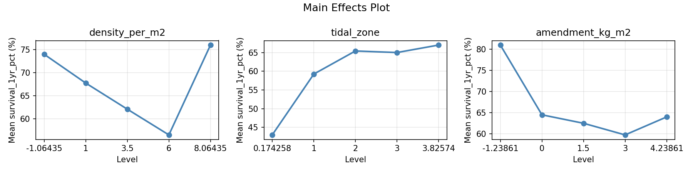
Normal Probability Plot of Effects
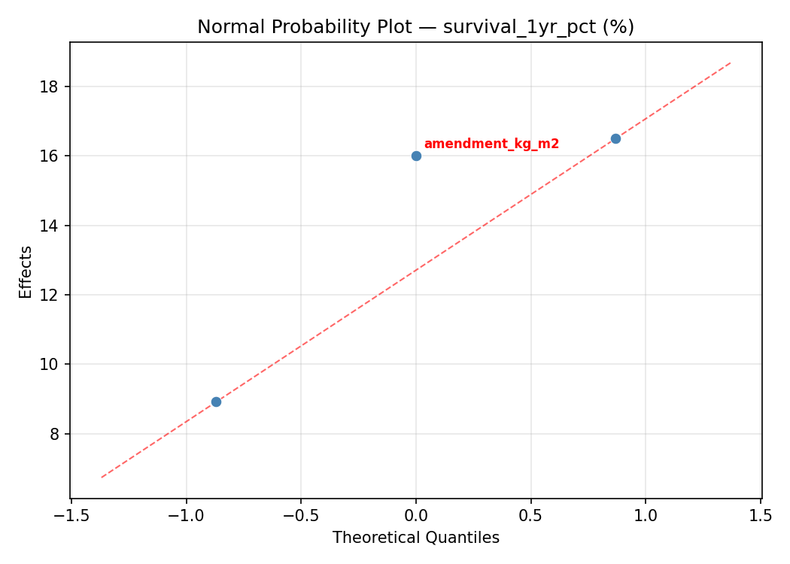
Half-Normal Plot of Effects
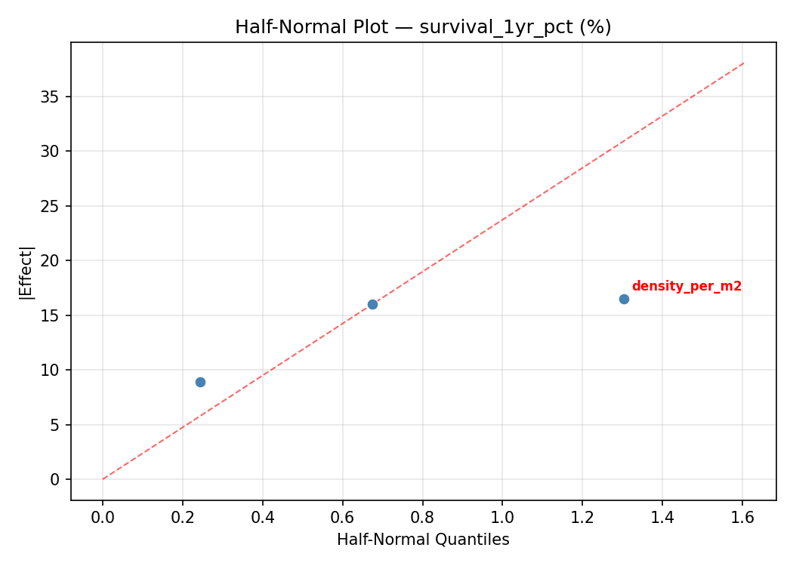
Model Diagnostics
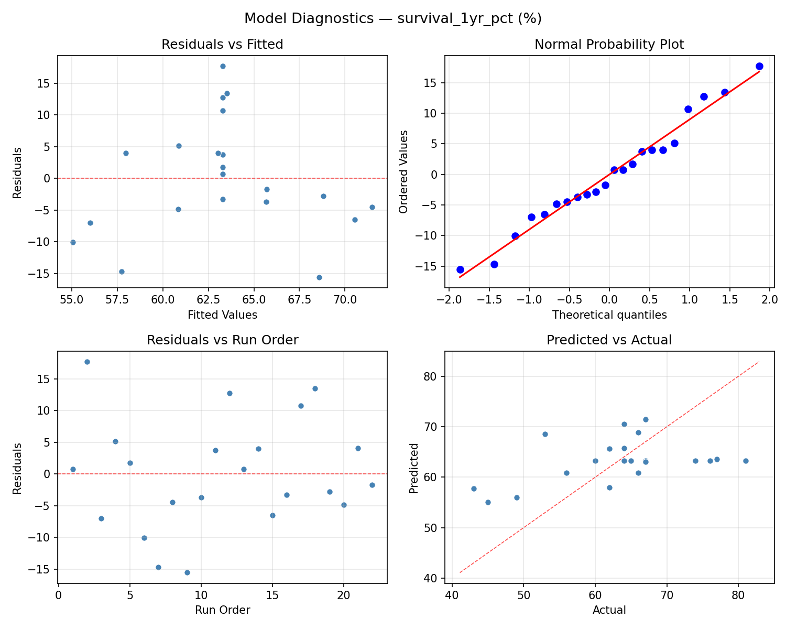
Response: height_gain_cm
Top factors: tidal_zone (51.7%), amendment_kg_m2 (32.0%), density_per_m2 (16.3%).
ANOVA
| Source | DF | SS | MS | F | p-value |
|---|
| Source | DF | SS | MS | F | p-value |
| density_per_m2 | 4 | 26.5909 | 6.6477 | 0.230 | 0.9144 |
| tidal_zone | 4 | 319.1742 | 79.7936 | 2.765 | 0.0945 |
| amendment_kg_m2 | 4 | 277.3409 | 69.3352 | 2.403 | 0.1264 |
| Lack | of | Fit | 2 | 323.9848 | 161.9924 |
| Pure | Error | 7 | 202.0000 | | |
| Error | 9 | 525.9848 | 28.8571 | | |
| Total | 21 | 1149.0909 | 54.7186 | | |
Pareto Chart

Main Effects Plot
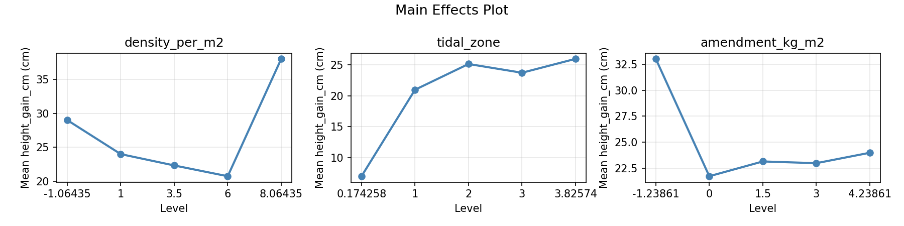
Normal Probability Plot of Effects
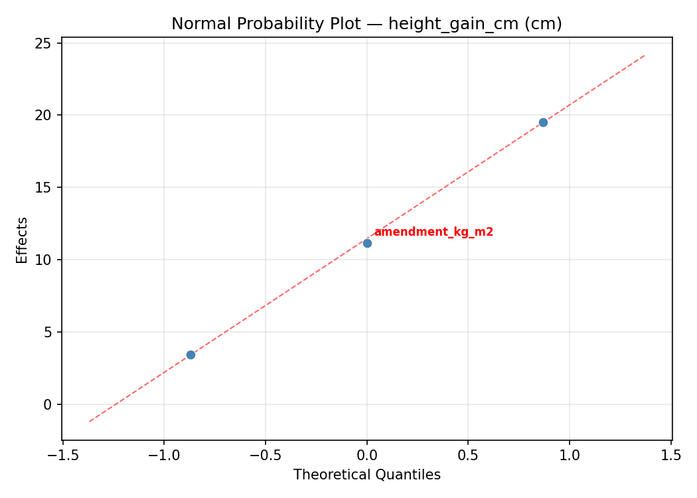
Half-Normal Plot of Effects
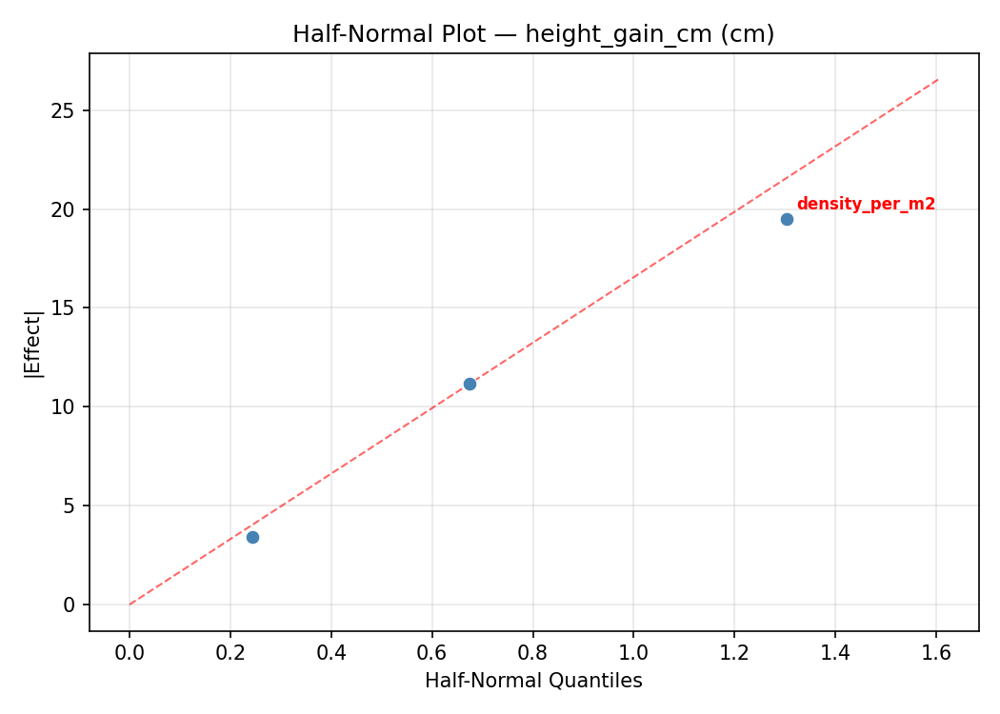
Model Diagnostics
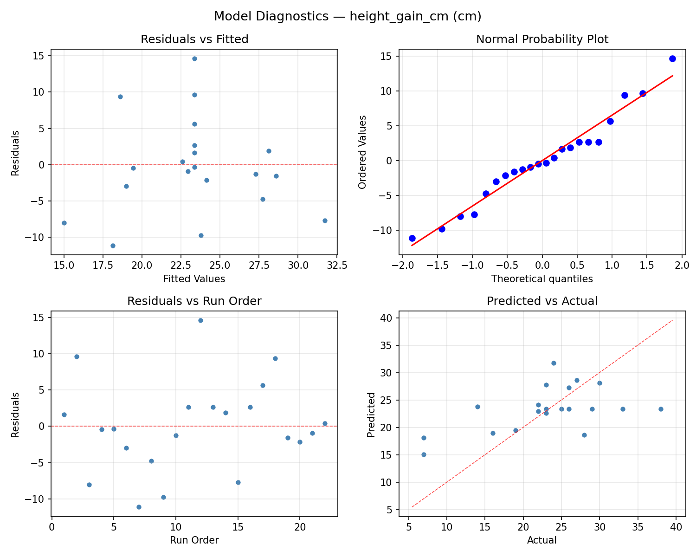
Response Surface Plots
3D surfaces fitted with quadratic RSM. Red dots are observed data points.
height gain cm density per m2 vs amendment kg m2
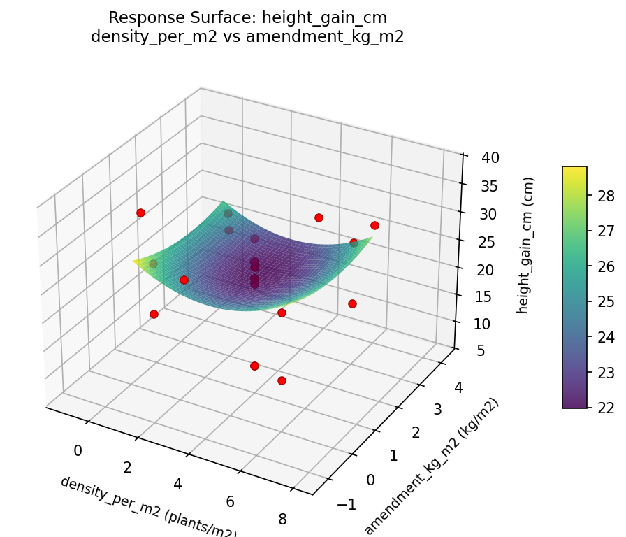
height gain cm density per m2 vs tidal zone
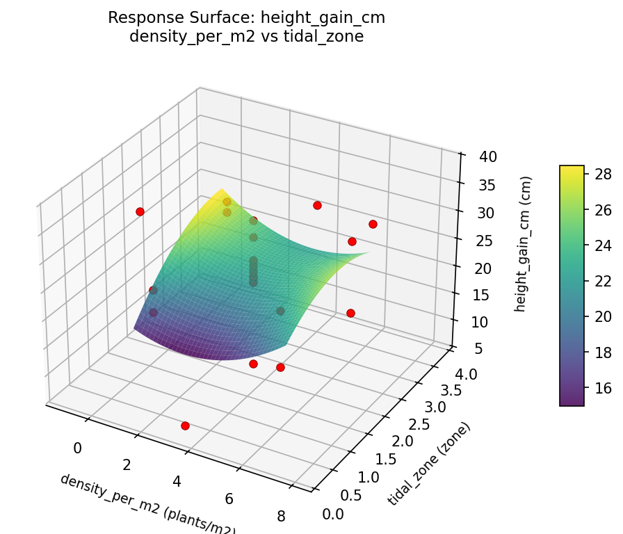
height gain cm tidal zone vs amendment kg m2
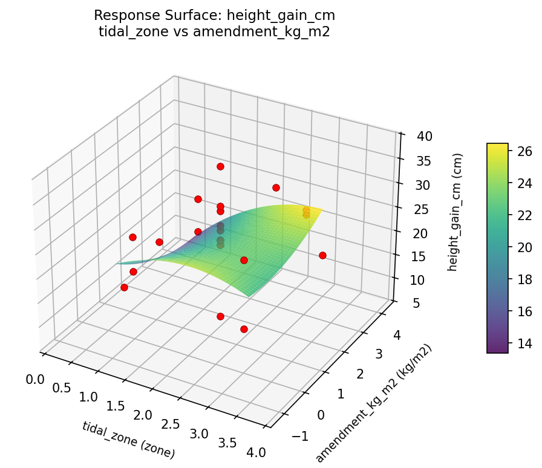
survival 1yr pct density per m2 vs amendment kg m2

survival 1yr pct density per m2 vs tidal zone
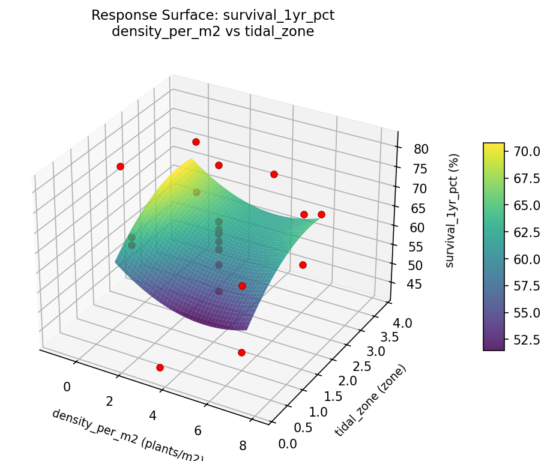
survival 1yr pct tidal zone vs amendment kg m2
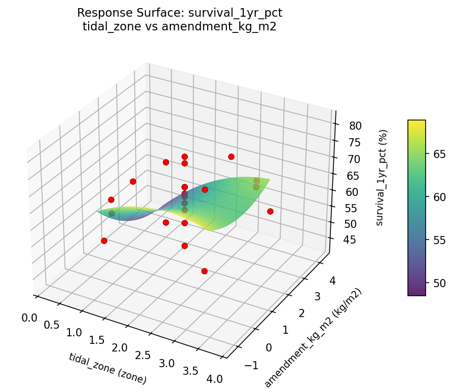
Multi-Objective Optimization
When responses compete, Derringer–Suich desirability finds the best compromise.
Each response is scaled to a 0–1 desirability, then combined via a weighted geometric mean.
Overall Desirability
D = 0.8887
Per-Response Desirability
| Response | Weight | Desirability | Predicted | Dir |
|---|
survival_1yr_pct |
2.0 |
|
81.00 0.9545 81.00 % |
↑ |
height_gain_cm |
1.5 |
|
33.00 0.8079 33.00 cm |
↑ |
Recommended Settings
| Factor | Value |
|---|
density_per_m2 | 6 plants/m2 |
tidal_zone | 3 zone |
amendment_kg_m2 | 0 kg/m2 |
Source: from observed run #2
Trade-off Summary
Sacrifice = how much worse than single-objective best.
| Response | Predicted | Best Observed | Sacrifice |
|---|
height_gain_cm | 33.00 | 38.00 | +5.00 |
Top 3 Runs by Desirability
| Run | D | Factor Settings |
|---|
| #12 | 0.8842 | density_per_m2=3.5, tidal_zone=2, amendment_kg_m2=1.5 |
| #18 | 0.7678 | density_per_m2=8.06435, tidal_zone=2, amendment_kg_m2=1.5 |
Model Quality
| Response | R² | Type |
|---|
height_gain_cm | 0.0464 | linear |
Full Multi-Objective Output
============================================================
MULTI-OBJECTIVE OPTIMIZATION
Method: Derringer-Suich Desirability Function
============================================================
Overall desirability: D = 0.8887
Response Weight Desirability Predicted Direction
---------------------------------------------------------------------
survival_1yr_pct 2.0 0.9545 81.00 % ↑
height_gain_cm 1.5 0.8079 33.00 cm ↑
Recommended settings:
density_per_m2 = 6 plants/m2
tidal_zone = 3 zone
amendment_kg_m2 = 0 kg/m2
(from observed run #2)
Trade-off summary:
survival_1yr_pct: 81.00 (best observed: 81.00, sacrifice: +0.00)
height_gain_cm: 33.00 (best observed: 38.00, sacrifice: +5.00)
Model quality:
survival_1yr_pct: R² = 0.0969 (linear)
height_gain_cm: R² = 0.0464 (linear)
Top 3 observed runs by overall desirability:
1. Run #2 (D=0.8887): density_per_m2=6, tidal_zone=3, amendment_kg_m2=0
2. Run #12 (D=0.8842): density_per_m2=3.5, tidal_zone=2, amendment_kg_m2=1.5
3. Run #18 (D=0.7678): density_per_m2=8.06435, tidal_zone=2, amendment_kg_m2=1.5
Full Analysis Output
=== Main Effects: survival_1yr_pct ===
Factor Effect Std Error % Contribution
--------------------------------------------------------------
density_per_m2 19.2500 2.0610 34.9%
amendment_kg_m2 19.2500 2.0610 34.9%
tidal_zone 16.6667 2.0610 30.2%
=== ANOVA Table: survival_1yr_pct ===
Source DF SS MS F p-value
-----------------------------------------------------------------------------
density_per_m2 4 341.9470 85.4867 1.239 0.3607
tidal_zone 4 319.9470 79.9867 1.160 0.3898
amendment_kg_m2 4 537.3636 134.3409 1.947 0.1867
Lack of Fit 2 280.2311 140.1155 2.031 0.2015
Pure Error 7 482.8750 68.9821
Error 9 763.1061 68.9821
Total 21 1962.3636 93.4459
=== Summary Statistics: survival_1yr_pct ===
density_per_m2:
Level N Mean Std Min Max
------------------------------------------------------------
-1.06435 1 77.0000 0.0000 77.0000 77.0000
1 4 57.7500 16.3172 43.0000 76.0000
3.5 12 63.1667 8.6111 49.0000 81.0000
6 4 66.0000 1.4142 64.0000 67.0000
8.06435 1 62.0000 0.0000 62.0000 62.0000
tidal_zone:
Level N Mean Std Min Max
------------------------------------------------------------
0.174258 1 49.0000 0.0000 49.0000 49.0000
1 4 63.5000 13.1276 45.0000 76.0000
2 12 65.6667 8.1054 53.0000 81.0000
3 4 60.2500 11.5866 43.0000 67.0000
3.82574 1 60.0000 0.0000 60.0000 60.0000
amendment_kg_m2:
Level N Mean Std Min Max
------------------------------------------------------------
-1.23861 1 74.0000 0.0000 74.0000 74.0000
0 4 54.7500 12.5000 43.0000 67.0000
1.5 12 63.2500 8.9962 49.0000 81.0000
3 4 69.0000 4.6904 66.0000 76.0000
4.23861 1 64.0000 0.0000 64.0000 64.0000
=== Main Effects: height_gain_cm ===
Factor Effect Std Error % Contribution
--------------------------------------------------------------
tidal_zone 19.0000 1.5771 51.7%
amendment_kg_m2 11.7500 1.5771 32.0%
density_per_m2 6.0000 1.5771 16.3%
=== ANOVA Table: height_gain_cm ===
Source DF SS MS F p-value
-----------------------------------------------------------------------------
density_per_m2 4 26.5909 6.6477 0.230 0.9144
tidal_zone 4 319.1742 79.7936 2.765 0.0945
amendment_kg_m2 4 277.3409 69.3352 2.403 0.1264
Lack of Fit 2 323.9848 161.9924 5.614 0.0351
Pure Error 7 202.0000 28.8571
Error 9 525.9848 28.8571
Total 21 1149.0909 54.7186
=== Summary Statistics: height_gain_cm ===
density_per_m2:
Level N Mean Std Min Max
------------------------------------------------------------
-1.06435 1 28.0000 0.0000 28.0000 28.0000
1 4 22.7500 13.8894 7.0000 38.0000
3.5 12 23.5000 6.8689 7.0000 33.0000
6 4 22.7500 2.8723 19.0000 26.0000
8.06435 1 22.0000 0.0000 22.0000 22.0000
tidal_zone:
Level N Mean Std Min Max
------------------------------------------------------------
0.174258 1 7.0000 0.0000 7.0000 7.0000
1 4 24.0000 9.7639 16.0000 38.0000
2 12 24.9167 4.6604 14.0000 33.0000
3 4 21.5000 10.0830 7.0000 30.0000
3.82574 1 26.0000 0.0000 26.0000 26.0000
amendment_kg_m2:
Level N Mean Std Min Max
------------------------------------------------------------
-1.23861 1 29.0000 0.0000 29.0000 29.0000
0 4 17.2500 7.5884 7.0000 23.0000
1.5 12 23.2500 6.8108 7.0000 33.0000
3 4 28.2500 7.9320 19.0000 38.0000
4.23861 1 24.0000 0.0000 24.0000 24.0000
Optimization Recommendations
=== Optimization: survival_1yr_pct ===
Direction: maximize
Best observed run: #2
density_per_m2 = 1
tidal_zone = 1
amendment_kg_m2 = 0
Value: 81.0
RSM Model (linear, R² = 0.1996, Adj R² = 0.0662):
Coefficients:
intercept +63.2727
density_per_m2 -0.3740
tidal_zone -5.1162
amendment_kg_m2 +0.6286
RSM Model (quadratic, R² = 0.5191, Adj R² = 0.1584):
Coefficients:
intercept +61.2464
density_per_m2 -0.3740
tidal_zone -5.1162
amendment_kg_m2 +0.6286
density_per_m2*tidal_zone -1.0000
density_per_m2*amendment_kg_m2 +0.2500
tidal_zone*amendment_kg_m2 +7.0000
density_per_m2^2 +1.4132
tidal_zone^2 -1.1368
amendment_kg_m2^2 +2.7632
Curvature analysis:
amendment_kg_m2 coef=+2.7632 convex (has a minimum)
density_per_m2 coef=+1.4132 convex (has a minimum)
tidal_zone coef=-1.1368 concave (has a maximum)
Notable interactions:
tidal_zone*amendment_kg_m2 coef=+7.0000 (synergistic)
density_per_m2*tidal_zone coef=-1.0000 (antagonistic)
Predicted optimum (from quadratic model, at observed points):
density_per_m2 = 6
tidal_zone = 1
amendment_kg_m2 = 0
Predicted value: 76.1495
Surface optimum (via L-BFGS-B, quadratic model):
density_per_m2 = 6
tidal_zone = 1
amendment_kg_m2 = 0
Predicted value: 76.1495
Model quality: Moderate fit — use predictions directionally, not precisely.
Factor importance:
1. tidal_zone (effect: 20.8, contribution: 38.9%)
2. density_per_m2 (effect: 20.0, contribution: 37.5%)
3. amendment_kg_m2 (effect: 12.6, contribution: 23.6%)
=== Optimization: height_gain_cm ===
Direction: maximize
Best observed run: #12
density_per_m2 = 8.06435
tidal_zone = 2
amendment_kg_m2 = 1.5
Value: 38.0
RSM Model (linear, R² = 0.1798, Adj R² = 0.0431):
Coefficients:
intercept +23.3636
density_per_m2 +1.5826
tidal_zone -3.4029
amendment_kg_m2 -0.0651
RSM Model (quadratic, R² = 0.6244, Adj R² = 0.3428):
Coefficients:
intercept +22.5742
density_per_m2 +1.5826
tidal_zone -3.4029
amendment_kg_m2 -0.0651
density_per_m2*tidal_zone +0.7500
density_per_m2*amendment_kg_m2 -0.5000
tidal_zone*amendment_kg_m2 +4.7500
density_per_m2^2 +2.4947
tidal_zone^2 -2.6053
amendment_kg_m2^2 +1.2947
Curvature analysis:
tidal_zone coef=-2.6053 concave (has a maximum)
density_per_m2 coef=+2.4947 convex (has a minimum)
amendment_kg_m2 coef=+1.2947 convex (has a minimum)
Notable interactions:
tidal_zone*amendment_kg_m2 coef=+4.7500 (synergistic)
density_per_m2*tidal_zone coef=+0.7500 (synergistic)
density_per_m2*amendment_kg_m2 coef=-0.5000 (antagonistic)
Predicted optimum (from quadratic model, at observed points):
density_per_m2 = 8.06435
tidal_zone = 2
amendment_kg_m2 = 1.5
Predicted value: 33.7794
Surface optimum (via L-BFGS-B, quadratic model):
density_per_m2 = 6
tidal_zone = 1
amendment_kg_m2 = 0
Predicted value: 33.3090
Model quality: Moderate fit — use predictions directionally, not precisely.
Factor importance:
1. tidal_zone (effect: 21.0, contribution: 47.4%)
2. density_per_m2 (effect: 16.5, contribution: 37.2%)
3. amendment_kg_m2 (effect: 6.8, contribution: 15.4%)